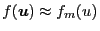
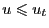
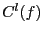
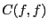
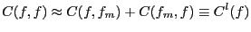
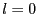
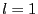
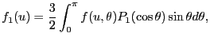

Next: Effective temperature Up: runaway_problem Previous: Boundary condition
If  for , the following linearized collision operator, , is a good approximation to the full collision operator .
|  | (16) |
In order to make the linearized collision operator have the property of momentum-conservation, the second term of the linearized collision operator must be retained. It can be proved that it is only the first Legendre harmonic of this term that is responsible for the parallel momentum-conservation[6]. Therefore, to make momentum conserve, and at the same time to make the collision operator simple, we can retain only the  and  Legendre harmonics of this term. In practice, the term is usually discarded. The purpose in doing this is to artificially remove the Ohm heating from the system. (This procedure is obviously not-physical and unreasonable. I do not like this, so I prefer the approximation in Eq. (17) although it may be inaccurate.)
The second term of the linearized collision operator is modified to include only the first Legendre harmonic, i.e. the collision operator actually used in the numerical calculation is
|  | (19) |
The collision operator defined in Eq. (18) is widely used in numerical codes dealing with noninductive current drive by waves[6].
YouJun Hu 2012-12-08